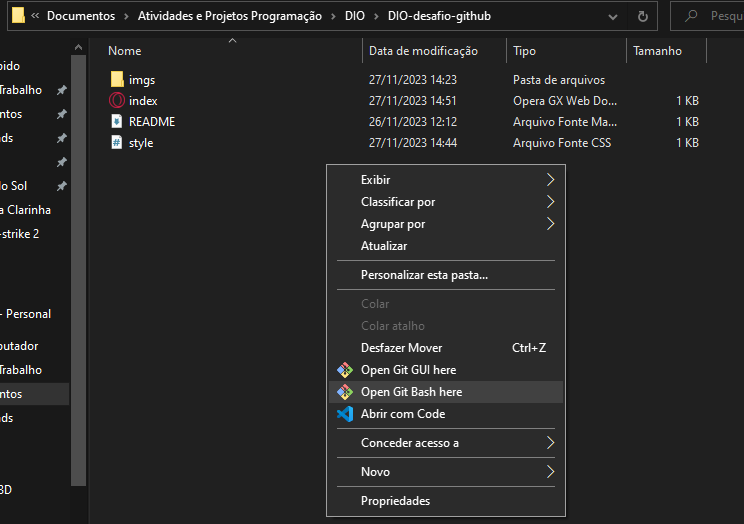
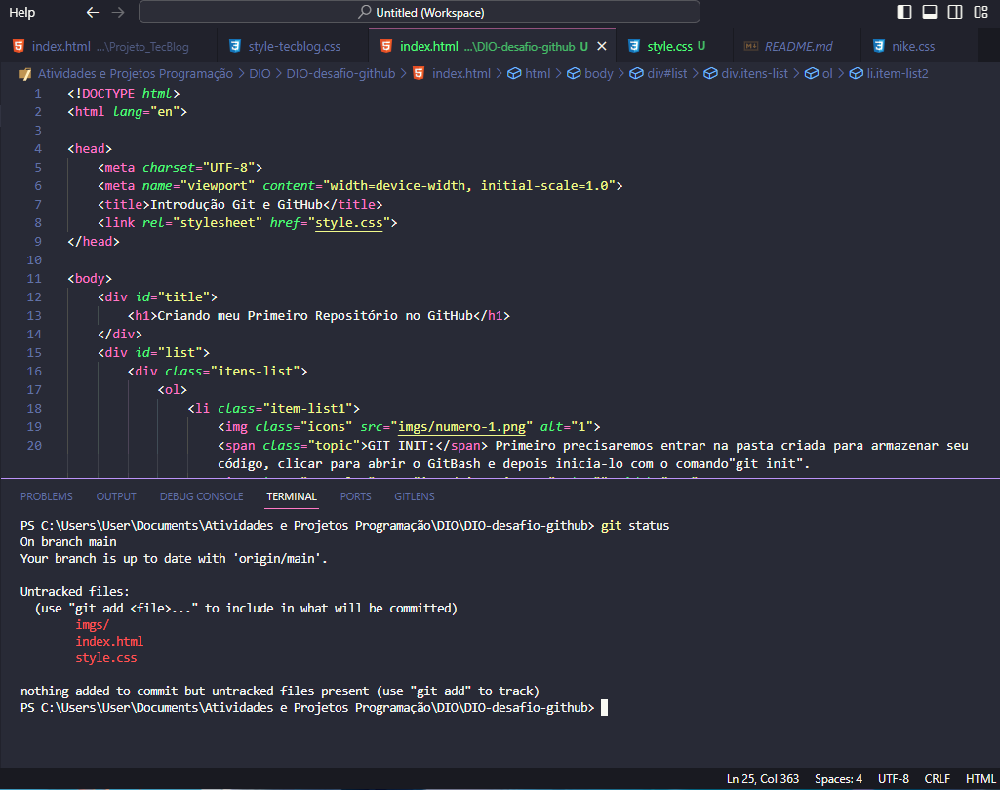
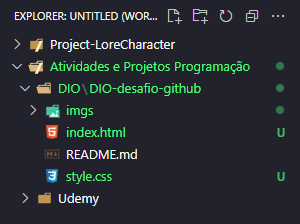
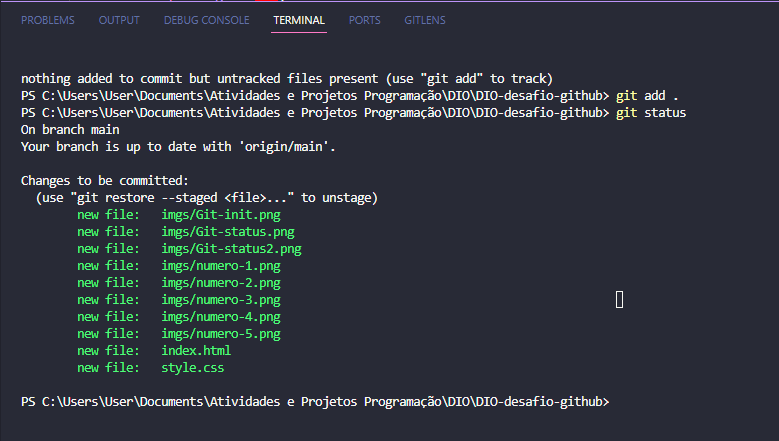
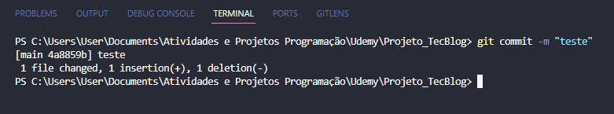
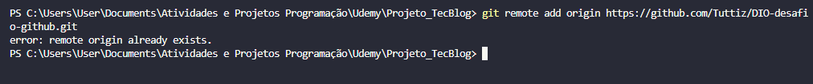
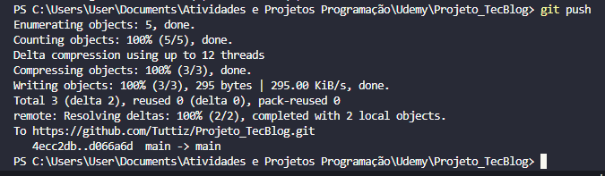

-
GIT INIT:
Primeiro precisaremos entrar na pasta criada para armazenar seu código, clicar para abrir o GitBash e depois inicia-lo com o comando "git init".
 -
 GIT STATUS:
GIT STATUS:
Depois de iniciar o local que o Repositório ficará guardado, você poderá criar arquivos e fazer alterações dentro de seu código. Com isso ,você poderá usar o comando "git status", que irá mostrar o que foi criado e o que foi modificado dentro do código, fazendo com que o arquivo se fique como Untracked.
  -
 GIT ADD:
GIT ADD:
Após verificar tudo que foi modificado e feito no seu código, você vai precisar adicionar toda essa modificação pra dentro do repositório, para isso utilizamos o comando "git add" que pode vir adicionado de um "." ou do nome do arquivo que está sendo adicionado ou modificado. o "." serve para adicionar tudo que foi mudado ou criado e para adicionar um arquivoespecífico você coloca somente o nome do arquivo.
 -
 GIT BRANCH e COMMIT:
GIT BRANCH e COMMIT:
Agora, ates de fazer um commit, ou seja para finalmente salvar todo o seu processo, você deve primeiro utilizar o comando "git branch -M main". Esse comando vai especificar em que branch você vai estar associando todo seu projeto, normalmente a chamamos de "main ou master". pós definir a branch você pode fazer o commit com o comando "git commit -m "anotação pessoal"", que vai definir o nome desse seu novo commit.
 - GIT REMOTE ADD ORIGIN e PUSH: O comando "git remote add origin" é o comando que vai pegar o link do repositório vazio já criado no próprio GitHub, pegando o https do repositório o comando é o seguinte "git remote add origin https://github.com/Tuttiz/DIO-desafio-github.git" (substitua esse link pelo seu) e por fim, fazer o comando"git push". Git Push vai pegar todos os arquivos e modificações e vai enviar para o repositório já no GithHub. PS.: o git remote deu erro pois meu repositório já estava linkado.  